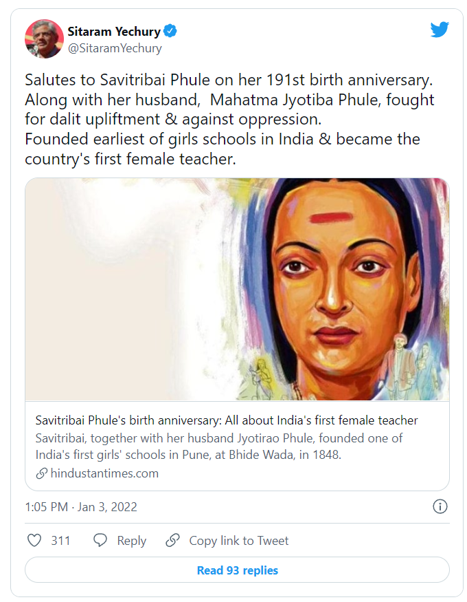
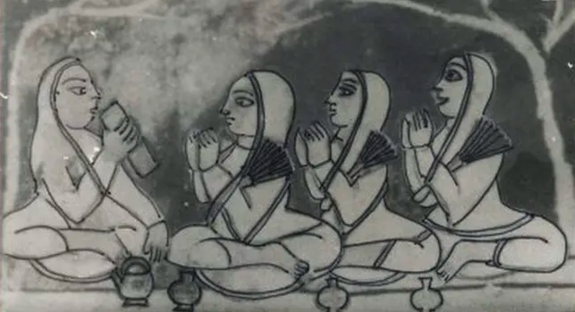
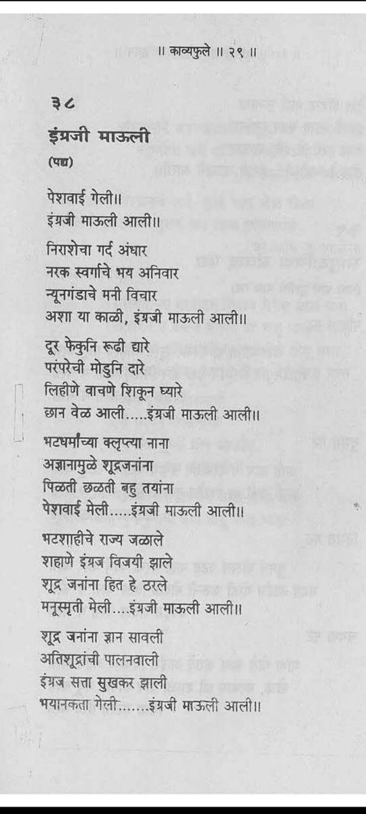
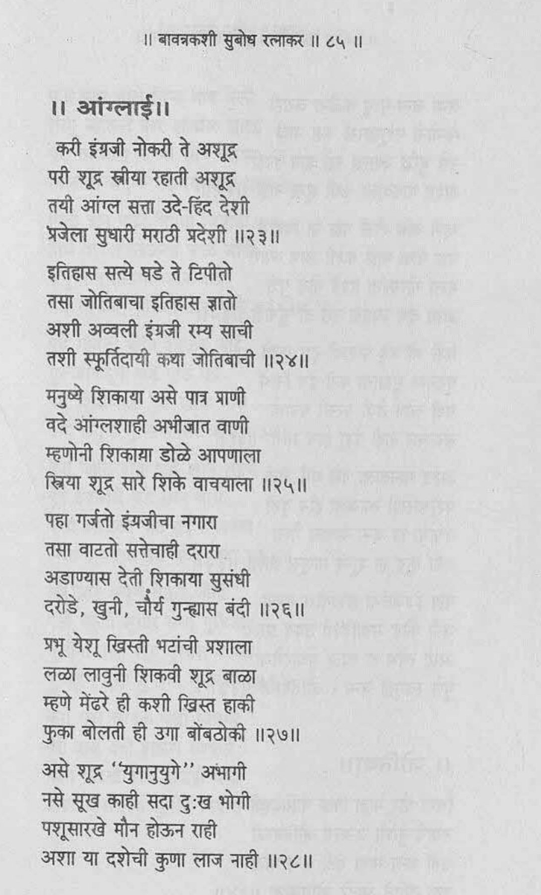
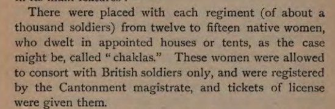
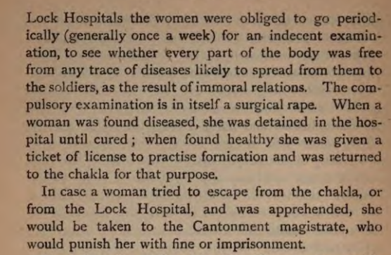
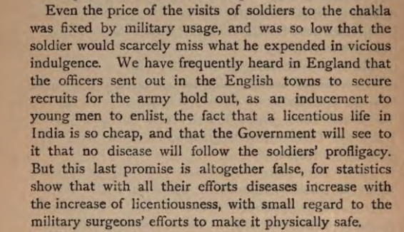
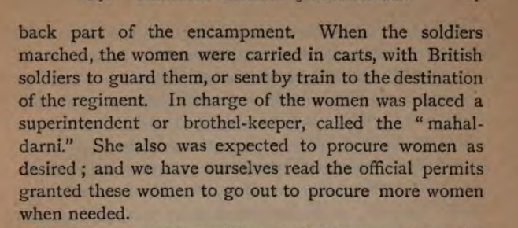
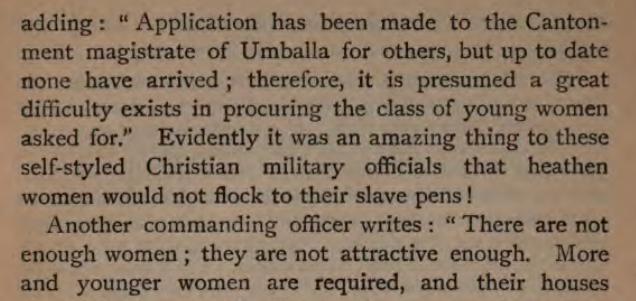
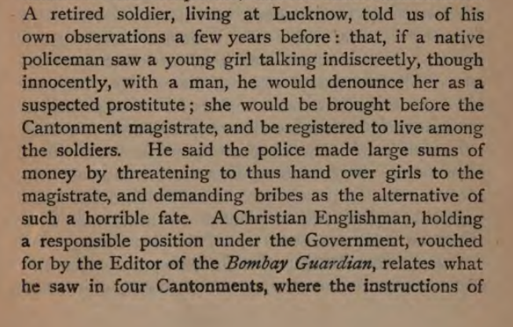

Hotee was a Bengali Hindu widow.
She was a scholar of Sanskrit Poetry, Law, Mathematics and Ayurveda.
She established a School in Varanasi for women. She was awarded the title "Vidyalankar" by Kashi Pandits.
This was BEFORE Savitribai was even born.
First female teacher who?


Hotee Vidyalankar died 21 years BEFORE Savitribai Phule was even born.
Why is she ignored and why is Savitribai Phule falsely acknowledged as "first female teacher"? Is it because
Hotee was just an orthodox Hindu Brahmin lady and NOT an agent of British missionaries?
Harkunwar Sethani was an orthodox Jain lady. She built Maganlal Karamchand School for girls in Ahmedabad.
The construction was started in 1847 (completed 1850) which was one year BEFORE Savitribai Phule's "school".
Why are hundreds of women like them ignored to hail Savitribai?
Savitribai Phule wrote poems glorifying British and Christianity. (p/c @onkarmantra)
Infact, Savitribai Phule's school was sponsored by British missionaries. Savitribai herself was awarded by
British on November 16, 1852. British declared Savitribai as the best teacher.


The question needs to be asked. The British were colonial invaders whose had no qualms in destroying India
and kiIIing lakhs of Indians.
What was their agenda in sponsoring Savitribai's project? Why interest did British have in Indian women? The
answer will be very surprising.
British treated colonial India as a dump for their men acting as soldiers of East India Company (& later the
crown). Around 100 military cantonments housed them in 1850s.
These soldiers were living far away from their native country and had several needs. Including sensual needs
British used Indian women to fulfill sεxual needs of their soldiers.
In every military cantonment, many Indian women were forcibly confined. They were not allowed to leave the
premises. They were allowed to consort with British soldiers only. They were registered to cantonment.

When people like Savitribai Phule were singing praises of British, Indian women were forced to undergo
"physical examination" in cantonments. This was described as "surgical rape"
Any Indian woman who tried to escape from the British military cantonment was severely punished

Even the price was fixed by British. It was kept so low that licentious life in India became extremely cheap
for a British soldier and this acted as a job allurement.
By making the sεxual exploitation of Indian women almost free, the British were increasing their
recruitments.

As the British army's number increased, they needed more Indian women to quench their lasciviousness .
However, there was something acting as a major deterrent.
Those were the days of complete anarchy. There was no security for women & most families kept women inside
the house.
Before I proceed further, I pause to ask a question. Who other than a complete idiot believes that the
British,who were indulging in large scale sεxual exploitation of Indian women, were interested in education
and progress of Indian women?
This is where Phule comes into picture
What used to happen in these "British Schools"?
This thread will be continued.
The British were finding it difficult to procure "beautiful, young girls" into their military slave pens.
They appointed a superintendent who would go out in search of young girls. These superintendents especially
targeted schools and hospitals.


New methods were devised to drag young girls into the British military harems.
Any young woman found talking to a man was labelled a "pr0stitute". She would be dragged into the military
cantonment and forced to live there serving the soldiers.

The British soldiers began indiscriminately labeling Indian women as "pr0stitutes" & dragging them into
military harems.
To escape this fate, the family of the girl would often bribe the British soldier in order to be spared.
British soldiers amassed fortunes from these bribes